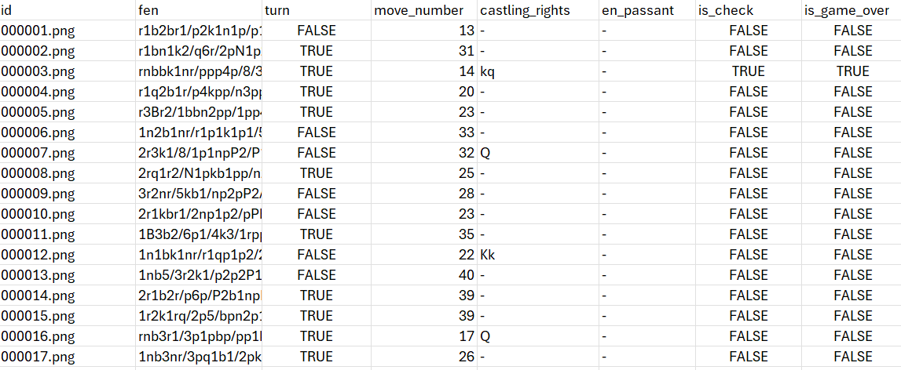
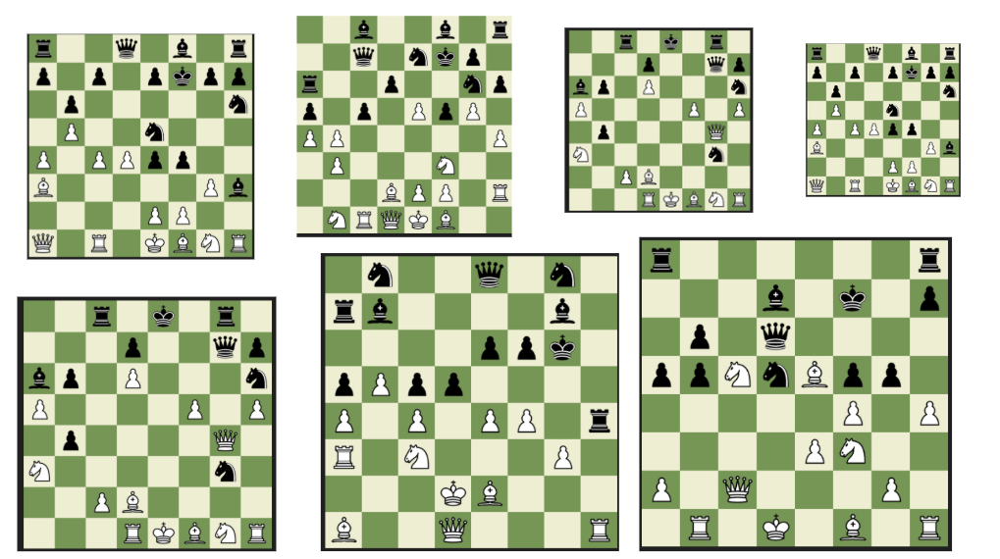

Chess Dataset Generator
| Type | Dataset Generation Tool |
| Status | active |
| Language | Python |
| Libraries | python-chess / Pillow |
| Output | PNG Dataset + Metadata |
| Repository | GitHub |
Overview
Chess Dataset Generator is a Python-based tool for procedurally generating chessboard image datasets from random legal chess positions.
The project renders chessboards using custom sprite sets and exports structured metadata alongside generated images.
It was built as a lightweight experiment for creating synthetic chess datasets for visualization and machine learning tasks.
Features
- Generate random legal chess positions
- Render chessboards from FEN strings
- Export image datasets with metadata
- Configurable board resolution and sprite sets
- Deterministic dataset generation using seeds
- Automatic metadata generation for each position
Dataset Generation
Legal chess positions are generated using python-chess and converted into rendered chessboard images using Pillow.
Each generated sample includes both the rendered board image and structured metadata describing the game state.
The generator supports configurable board sizes, sprite themes, and dataset output structure.
Metadata
Generated metadata includes information about the full board state and game conditions.
- FEN representation
- Current player turn
- Move counter
- Castling rights
- En passant availability
- Check status
- Game-over state
Customization
The generator supports multiple configuration options for controlling visual output and dataset structure.
- Custom chess piece sprite sets
- Adjustable image resolution
- Different board themes and layouts
- Custom position distribution logic
Screenshots


Applications
- Machine learning dataset generation
- Computer vision experiments
- Synthetic chessboard image generation
- Chess visualization systems
- Data augmentation workflows
Development Notes
The project explored procedural dataset generation and reproducible synthetic image pipelines.
Development focused on deterministic generation, configurable rendering, and metadata consistency.